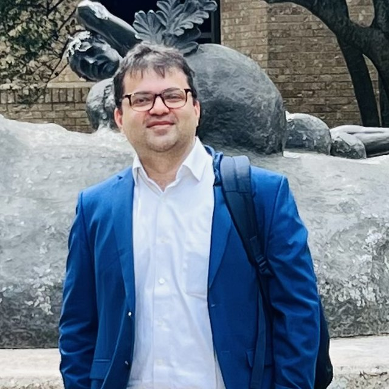

Somsubhra Chattopadhyay
Principal investigator, Assistant Professor of Biology (Ecohydrology)
Som works where watershed hydrology meets freshwater ecology. His research asks how flow regimes, and their alteration by climate change and human water use, shape biodiversity and ecosystem function in rivers, with a growing focus on intermittent streams and environmental DNA.
He trained in agricultural and civil engineering, with a PhD in Biosystems and Agricultural Engineering from the University of Kentucky (2017) and an MS from North Carolina A&T State University (2012). He was a postdoctoral researcher at the Ashoka Trust for Research in Ecology and the Environment in Bangalore and at Warsaw University of Life Sciences, Poland, where he developed integrated hydrological, hydraulic and habitat models for river biota. Before Texas State he held faculty positions at Mahindra University in India and the University of Wisconsin–Stevens Point.